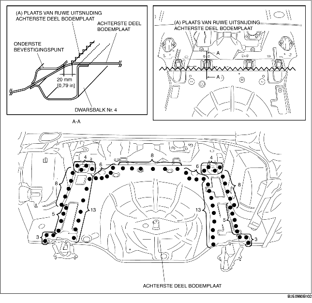

VERWIJDEREN VAN ACHTERSTE DEEL BODEMPLAAT
B3E098053750B01
1. Maak ruwe uitsnijdingen bij (A).
-
Opmerking
-
• Blijft bij het maken van ruwe uitsnijdingen bij (A) 20 mm {0,79 in} uit de buurt van de flens (naar achteren) bij de achterzijde van het onderste bevestigingspunt.
2. Verwijder het achterste deel van de bodemplaat.
